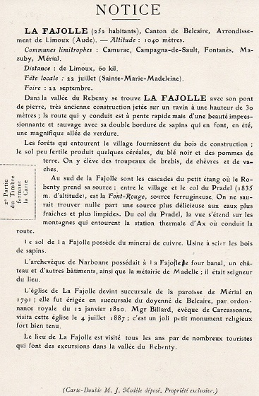
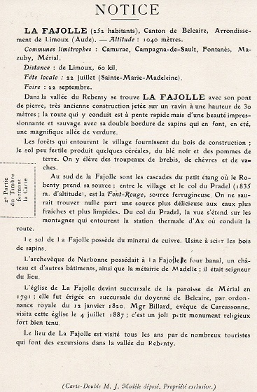
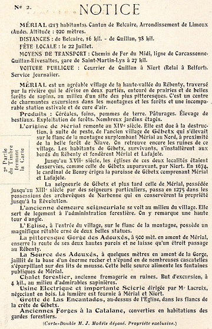
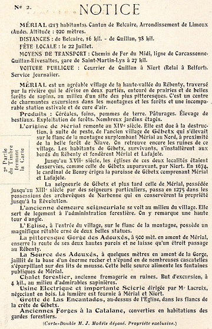
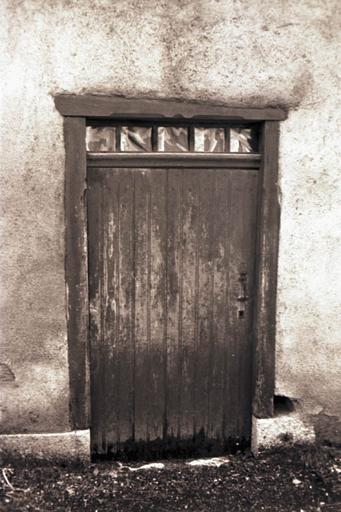

Table des entrées de la page
Présentation des chemins préexistants le long du Rébenty en 17221

Attention sur cette carte les repères Nord / Sud sont inversés (Quillan est en bas par rapport à St Martin, et le Rébenty est donc représenté à droite de l'Aude, contrairement avec le repère standard utilisé aujourd'hui
Il semble y avoir déjà une route partant de l'embouchure avec l'Aude et allant jusqu'à Joucou "suivant" le Rébenty toujours en rive gauche et traversant Cailla
La fiabilité de la carte ne me paraît pas certaine au vue du positionnement de Quirbajou et de l'absence de chemin entre Marsa et Quirbajou ; le hameau de La Prade (commune de Cailla) est situé en rive droite ce qui est erroné
Entre les 2 cartes de 18362 et de 18503 du département de l'Aude (gros plan sur l'axe Caudiès / La Fajolle) ci-dessous, le chemin vicinal de Grande Communication n°7 a été tracé


La loi de 1836 sur les chemins vicinaux, invitait les communes à améliorer les chemins principaux de leur territoires communiquant avec les communes voisines, en prélevant sur les impôts quelques centimes et imposant aux habitants à participer aux travaux un nombre donnée de journées. Certains chemins stratégiques pour le département sont votés par le conseil départemental pour devenir des chemins vicinaux de grande communication (impliquant plusieurs communes et joignant d'autres départements).
Dès 1837, un chemin suivant le Rébenty sur toute sa longueur est pressenti par le conseil général et soutenu par le préfet de l'Aude. Une enquête d'utilité publique est organisée : un courrier est transmis aux communes concernées le 14 juin 1837 par la sous-préfecture de Limoux pour recueillir l'avis de toutes les communes de la vallée du Rébenty
En 1838, le tracé du chemin se précise, il portera le nom de chemin de grande communication n° 7, il ne passera finalement ni par Axat, ni par Cailla à la grande déception de cette commune..., Mais suivra le ruisseau d'Aliès depuis le col de Campérié, puis l'Aude et enfin le Rébenty (entre le confluant de l'Aliès et le confluant du Rébenty sur l'Aude la route sera commune avec le route départementale n° 17, La route royale N°117 sur sa partie entre Caudiès et Quillan doit être déplacée et suivra la partie Puilaurens/confluant du Rébenty que devait emprunter le chemin n°7, réduisant finalement ce chemin à la partie qui longe le Rébenty jusqu'en haut du col de Pradel)
Est également considéré comme constituant le chemin de grande communication n°7, le chemin partant de Belfort sur Rébenty, passant par Espezel, pour rejoindre la route départementale N°22 du grand plateau de Sault
Le projet précisé, le sous-préfet relance le 23 juillet 1838 une nouvelle enquête d'utilité publique et demande aux communes concernées leur engagement respectifs pour la réalisation du chemin.
En 1839, le préfet concrétise les engagements respectifs en décidant de combien de centimes et de journées de travail pour les chemins vicinaux doivent acquitter les communes concernées. Le sous préfet dans un courrier du 22 novembre 1839 demande aux dites communes combien elles comptent, par rapport à cette imposition, consacrer en 1840 au chemin n° 7
Ci-après, les réponses des communes concernées à ces 3 courriers, reportées dans leur registres des affaires communales (quand le registre existe aux archives départementales...)
Voir Ex-propriation pour tracer la route de Puilaurens à Lafajole - acte du 31 juillet 1838
[Remarque: le Registre des affaires communales de St Martin ne comporte aucun articles pour 1837, donc pas de délibération en juillet 1837 sur une enquête d'utilité publique : dommage car aurait été instructif...
En Juin 1840, les plans de la future route sont dressés pour la partie commune entre la départementale n° 17 et le chemin de grand communication n°7 - c'est à dire entre le pont à l'embouchure du Rébenty jusqu'au pont d'Aliès : ce chemin doit être porté à 3,50 mètres de large
29 juillet 1838 p 4 - Délibération sur le classement du chemin de grande communication partant des limites de L'Aude dans la commune de Puilaurens jusqu'aux limites du même département dans la commune de Lafajolle [Vide]
30 juillet 1838 p 5, 6 , 7 et 8 - Délibération du conseil municipal de la commune de Niort, sur la convenance et l'utilité de classer au rang de chemins vicinaux de grande communication celui partant des limites de l'Aude dans la commune de Puilaurens aux limites du même département dans la commune de Lafajolle, avec embranchement de Belfort à Belcaire passant par Espezel et Roquefeuil
Le conseil municipal de la commune de Niort, du canton de Belcaire, réuni en session extraordinaire dans le lieu ordinaire de ses séances, en vertu de la lettre de Monsieur le Sous-Préfet de l'arrondissement de Limoux du 23 de ce mois,
Présents Messieurs Teulière Joseph Martin [n'est pas de ma famille...], Bes Antoine Capouny, Chourreau Marcel, Lacroix Eustache, Delpey Jean-Marie, Bounes Jean Paul, Bes Raphaël, Soubrevie Magloire, Segui Guillaume, Rocher Jean-François, Delpey Jean (adjoint) et Fondi-de Niort Antoine-Louis-Alphonse (maire)
Monsieur le maire a donné lecture au conseil de la dite lettre de Mr le Sous-Préfet, par laquelle le magistrat l'invite à délibérer et émettre son avis sur :
Sur ce, le conseil prenant en sérieuse considération la lettre de Monsieur le Sous-Préfet, après y avoir mûrement réfléchi
Considérant que les habitants de la vallée de Rébenty et des communes qui la bordent à sa droite, sont absolument dénuée de toute ligne de communication praticable, soit vers le centre du département de l'Aude, soit vers les Pyrénées Orientales, soit vers le haut Ariège ; lieux avec lesquels ils doivent nécessairement correspondre journellement, tant pour l'écoulement de leurs produits, que pour leur approvisionnements;
Que le projet dont s'agit offre des communications faciles et sures dans ces 3 directions, et que leur défaut est une des causes les plus fécondes de misère dans ce canton, en arrêtant ou contrariant tout mouvement d'industrie et de commerce
Considérant que la profondeur et l'abri qu'offre la vallée de Rébenty relativement au pays qui l'entoure permettront aux voyageurs et aux transports de circuler dans toutes les saisons et sans danger sur toute la longueur de la vallée, soit pour aboutir à Quillan en descendant l'Aude par la route départementale n°17 [la route de la Pierre-lys], soit aux Pyrénées Orientales par Caudiès; et qu'aucun autre emplacement, pris à droite ou à gauche de la vallée du Rébenty ne peut présenter la même sécurité ; que bien au contraire, il n'est pas dans le canton, de commune qui n'ait à regretter quelqu'un de ses habitants perdus dans les neiges et les tourbillons de la plaine de Sault, qui tous les hivers devient fatale à un grand nombre de voyageur ; soit en leur causant la mort aussitôt, soit en leur faisant contracter des maladies qui les mènent le plus souvent au tombeau, ou ne leur laisse qu'une vie pénible tourmentée par les douleurs.
Considérant que que nonobstant tous ces malheurs qui n'arrivent le plus souvent que par surprise, en cours des jours où les voyageurs ont cru pouvoir s'aventurer sans danger ; la plaine de Sault reste impraticable pendant 8, 15 et même 30 jours suivis à plusieurs reprises durant les 6 mois d'hiver qui assiègent ce malheureux pays, soit qu'aucune puissance humaine puisse surmonter cet obstacle, et que par conséquent , sous le rapport de la sécurité , de la célérité, et de la non interruption des correspondances et des transports le projet qui nous occupe aura toujours sur les chemins placés ailleurs que dans la vallée de Rébenty, un avantage signalé, puisque l'expérience prouve que jamais et quelque temps qu'il fasse il n'y a ni impossibilité, ni même danger à suivre la vallée de Rébenty depuis l'Aude jusqu'aux confins de l'Ariège vers Lafajole.
Considérant sous le rapport de la direction que présente la vallée de Rébenty, qu'elle semble disposée exprès par la nature pour lier le pays de Sault au Roussillon et au Languedoc, puisque comme nous avons déjà dit, cette vallée se termine dans celle de l'Aude à une lieu et demi de Quillan, sur la route départementale n° 17, et que de ce point on parvient en peu de temps à Caudiès sur la route royale n°117, et cela pour une vallée d'une pente douce et facile qui ne semble être que la prolongation en ligne droite sur Caudiès de la vallée du Rébenty.
Considérant qu'il n'y a pas d'autre communication possible avec le Roussillon, que de suivre la dite vallée, ou bien d'aller passer par la plaine de Sault, la côte de Quillan et le col de St Louis, ce qui pour signaler de nouveau, les dangers réels que cette direction fait courir aux voyageurs, ni les côtes longues et pénibles ; ni les précipices qui les bordent, retardent les voyageurs pendant même la belle saison, de la valeur d'une journée de marche et augmente de beaucoup les frais de transports ;
Considérant au contraire, que la vallée de Rébenty conduit par une pente douce, en ligne directe vers le Roussillon, avec moins de temps, moins de frais, et sans péril
Considérant sous le rapport de sa centralité dans le pays de Sault ; qu'à la différence de la route n° 22 qui ne fera pour ainsi dire qu'effleurer le canton, le chemin de grande communication qui nous occupe, traversera ou passera très près de la plupart des communes du canton, et du reste de l'ancien pays de Sault ; qu'elle le sillonnera dans son vrai centre, et dans toute sa longueur ; et que de même que la rivière de Rébenty reçoit par de petites vallées toutes les eaux des campagnes voisines, comme étant le confluant général des ruisseaux de cette contrée, de même les embranchements qui existent pour la plupart tracées dans cette vallée, partant des villages circonvoisins et se dirigeant sur Rébenty feront du chemin placé sur ses bords, la seule voie généralement plus utile au pays ; la plus centrale ; la mieux accessible, la plus sure, la mieux abritée en un mot, la voie mère nourricière de tout le pays de Sault, et d'une partie du haut Ariège.
Considérant que le canton du Roussillon pour la consommation et l'approvisionnement du haut Ariège, une quantité prodigieuse de vin qu'on ne pas évaluer à moins de 5 à 6 mille charges, l'huile nécessaire à la consommation, du sel, du poisson salé, des denrées coloniales, en un mot la plupart des choses nécessaires à la vie, et de là, malgré les difficultés et la longueur du chemin actuel ; que le canton importe[sic...] à son tour dans le département, ses fers, ses bestiaux, ses bois, ses légumes, son avoine, ses œufs, ses viandes salées ; et qu'il est par conséquent de la plus haute importance pour ses habitants, d'avoir sur ces contrées un chemin toujours praticable, et aussi divers(?) que facile.
Considérant sous le rapport industriel, minéralogique et forestier, que les marbres les plus précieux, même le blanc hatriaire(?), abondent dans la vallée du Rébenty au dire des minéralogistes qui l'ont visité, (Gensanne, Devinège) qu'ils y ont trouvé plusieurs mines de fer, et de cuivre ; des traces de mines d'argent, de mercure, et d'autres métaux ; que les eaux du Rébenty alimentent des chutes en descision(?) propres à leur exploitation ;
Qu'on y trouve encore d'excellentes carrières d'ardoise dont le département est dépourvu ; et que le chemin projeté passerait aussi sur celles plus riches encore d'Ascou.
Considérant que la vallée de Rébenty, sans parler du reste du canton, possède environ 3000 hectare de magnifiques futaies de sapin, appartenant à l'Etat, et dont les produits par le manque total de chemin ne se vendent qu'environ le tiers de leur valeur actuelle ; à tel point qu'un arbre dont l'Etat retire dans la plaine de Sault de 60 à 80 francs, ne se vend avec les mêmes dimensions qu'au prix de 20 à 30 francs dans la vallée de Rébenty ; et que des arbres semblables pris dans la forêt de Bélesta voisine d'une grande route se vendent de 100 à 125 francs.
Considérant que toutes ces richesses minéralogiques, industrielles et forestières renfermées dans la vallée du Rébenty, ne peuvent être avantageusement exploitées sans l'ouverture d'un chemin charretier, et qu'il importe à l'Etat et aux départements voisins, autant qu'à ce canton que les richesses que cette vallée renferme soient enfin exploitées.
Considérant que tous les avantages ci-dessus énoncés, et bien d'autres encore, feront du chemin qui nous occupe, à la fois le complément et le supplément de la route départementale n°22 dans la plaine de Sault, ayant chacune d'ailleurs sa spécificité (la première en liant le canton vers l'orient, avec le Roussillon, Port Vendre et la mer ; vers l'occident avec le haut Ariège et l'Espagne par Ax et la route royale n° 20 - la seconde, avec Quillan, le canal du Midi et le bas Ariège) et que le pays ne peut que désirer l'établissement prochain de ces 2 importantes lignes de communication.
Considérant quant à la direction à donner au chemin projeté qu'elle est indiquée par celle de la vallée de Rébenty et par celle qui fait suite directement au Rébenty, à travers la commune de Puilaurens jusqu'à Caudiès vers l'orient ; et qu'à l'occident, l'expérience de tous les hivers a démontré que le col dit del Pradel limite de l'Ariège avec l'Aude dans la direction de Lafajolle est plus abrité, moins étendu, et par conséquent mieux accessible que le Port de Marmare qui sert de passage de la plaine de Sault avec le bas Ariège ; qu'en preuve de ce qui précède, le conseil pour affirmer qu'il ne se passe pas de semaine de l'hiver, que les habitants de Lafajolle, ne franchissent le col du Pradel pour aller à Ax faire des provisions tandis qu'on ne franchirait pas impunément à pareil jour le col de Marmare, ni la plaine de Sault, ce que les habitants du canton d'Ax connaissent parfaitement, puisqu'ils prennent de préférence la direction du Pradel à celle de Marmare quand ils viennent dans le pays de Sault ;
que d'ailleurs le col du Pradel, se trouvant sur la ligne qui joint la vallée de Rébenty à celle d'Ascou, Sorgeat et Ax, et par conséquent beaucoup plus direct pour communiquer avec cette ville, d'où le canton retire une infinité de provision, et dont il fréquente les foires renommées par l'affluence de meilleures races de bestiaux du pays de Sault et de l'Ariège ; qu'enfin sous le rapport des eaux thermales et des ressources hygiéniques, les habitants de la vallée du Rébenty et de sa rive droite; ceux d'une grande partie du Roussillon, du Roquefortes et des Corbières n'ont pas de voie plus sure ni plus courte que celle qui nous occupe en passant par le Pradel pour se rendre aux eaux d'Ax.
Considérant que depuis 1756, époque à laquelle les Etats du Languedoc votèrent un impôt spécial pour l'entretien des routes existantes et pour la création de nouvelles, le pays de Sault a contribué à l'établissement des routes et monuments qui embellissent notre province, sans que rien encore ait été fait pour améliorer le sort des populations de ce canton ;
Que le pays paye à l'Etat, 60.000 francs de contributions directes et 30.000 francs sur bureau d'enregistrement et des domines, sans parler des contributions indirectes qu'on ne peut bien apprécier; qu'il [l'Etat] retire plus de 100.000 francs de ses forêts dont les produits ont toujours été exploités sur nos chemins communaux; sans avoir jamais indemnisé les communes pour les dommages considérables qu'il leur a occasionnés ;
Que le chemin dont s'agit doublerait au moins les revenus actuels, et que les forêts exploitées dans la limite de leur possibilité sont capables, au dire des administrateurs forestiers les plus distingués de tripler encore les coupes actuelles ; qu'il est par conséquent plus que juste que l'Etat et le département, même dans leur intérêt, tournent les yeux vers ce malheureux pays en lui aidant à se créer un meilleur pour lequel il s'impose et espère depuis plus de 80 ans.
Le conseil par tout ce dossier est d'avis 1° qu'il y a convenance et grande utilité non seulement pour le canton, mais encore pour le département de l'Aude, de l'Ariège et des Pyrénées Orientales de classer le chemin dont s'agit au rang des chemins vicinaux de grande communication
2° qu'il doit suivre à l'orient la vallée de Rébenty dans toute sa longueur, et de don embouchure dans Aude, directement sur Caudiès à travers la commune de Puilaurens et au couchant passer au col del Pradel vers Ascou, Sorgeat et Ax,
3° Qu'il doit être charretier dans toute son étendue, et que pour augmenter encore son utilité il conviendrait de rendre charretier la partie de la route n°17 comprise entre Belvianes et l'embouchure du Rébenty,
4° que l'Etat ainsi que nous l'avons démontré, étant un riche propriétaire dans la vallée de Rébenty ; et ayant ainsi grand intérêt à l'ouverture du chemin qui nous occupe, puisqu'en lui assurant un nouveau et précieux débouché vers le Roussillon et la Méditerrannée, ainsi que vers le haut Ariège dépourvu de bois de construction, il lui offre encore un moyen sur et facile de transporter sur une pente douce le produit de leur adjudication disposée en bois long jusqu'à Joucou, d'où ce bois pendant 6 mois de l'année, pourrait être flotté sur le Rébenty, puis sur l'Aude et le vendre sur les marchés de notre département à moindre frais que ceux de la plaine de Sault.
Que l'état disons nous(?), soit compris par ces motifs pour une forte somme dans l'établissement du chemin latéral au Rébenty, somme qui soit en rapport avec ses revenus comparés à ceux des communes appelées à concourir à son établissement, et en rapport encore avec les avantages qu'il retirera de cette nouvelle voie.
Or les forêts domaniales des 3 communes de Niort, Mérial et Lafajolle, malgré le désavantage actuel de leur position ["et malgré qu'elles soient bien loin"] fournissent en tout bien(?) 1200 arbres d'adjudication qui donnent net à l'Etat 25.000 F tandis que le revenu total imposable des terrains des 3 communes n'est que d'environ 14.000 F
Répondant à la troisième question de la lettre de Mr le sous-Préfet, le conseil pense qu'il est évident pour celui qui connaît le pays de Sault, que toutes les communes du canton préféreront directement, de cette ligne de communication ; en effet, les habitants des communes de Comus, Camurac, Belcaire, Roquefeuil et Espezel descendront par la route départementale n°22 et par l'embranchement du chemin projeté jusqu'à Belfort, les 5 communes jouissant à la fois des avantages de 2 voies de communication crées dans le canton, disons(?) les plus favorisées. Belvis joindra le Rébenty par la vallée d'Ables puis les communes de la rive droite, par l'embranchement pratiqué de Belfort et d'Ables.
Mais le conseil n'a envisagé principalement, jusqu'ici, l'utilité du chemin latéral au Rébenty que sont les apports de la communications directe qu'il ouvrirait sur le Roussillon, et sur le haut Ariège, cependant il présenterait une utilité non moins grande au canton, en facilitant les relations avec Quillan, en effet quand on considère le développement extraordinaire que nécessite la montée de Quillan à Lapeyre, développement qui feront plus que doubles l'espace à parcourir sur une distance de 2 lieux ; le conseil ne craint pas d'affirmer que pour toutes les communes de la vallée pour celle de la rive droite c'est à dire pour 15 communes en y comprenant Bessède et Le clat qui ne peuvent aller ailleurs, le chemin du Rébenty sera plus court pour aller à Quillan que celui de la plaine de Sault et quant aux habitants des communes de la rive gauche, est-il douteux que pendant les 4 mois d'hiver, il ne prennent aussi, le plus souvent la ligne du Rébenty pour aller à Quillan, trop heureux d'éviter ainsi, par ce prolongement peut-être de 1000 à 1200 mètres le passage nécessaire de la plaine de Sault qui expose pendant certains jours, et pendant des semaines entières à une mort certaine, mais qui pendant plus longtemps encore, soit par la neige, soit par les tourbillons contrarient les voyageurs en plus de la retenir un jour durant à parcourir avec des efforts incroyables la distance de Coudons à Espezel c'est à dire 3 lieues de poste environ
Pour ces avantages et bien d'autres encore, aujourd'hui mieux apprécier, et incontestables pour tout homme de bonne fois, font désirer que les ressources du département jointer aux revenus de ce dernier dans ce canton permettent très prochainement de déclarer route départementale le chemin du Rébenty destiné à lier 3 départements à communiquer avec 2 routes royales (n° 20 et n° 117) 2 routes départementales (n° 17 et 22) à travers 5 cantons et ouvrir à industrie, aux capitaux et au commerce le trésor précieux des marbres les plus rares, des carrières d'ardoise, des plus belles futaies du midi, de ses mines de fer usinés, de ses charbons et de ses produits agricoles qui, sous le rapport de ses légumes, de ses avoines, de ses bestiaux obtiennent sur les marchés une geste préférence.
Enfin répondant à la dernière question posée par la lettre de Mr le Sous-Préfet, le conseil, vu l'état de misère qui afflige habituellement la commune de Niort, lieu des 4 plus malheureux du canton et vu également la nullité habituelle de ses ressources éprouve et manifeste la vive mortification, et tous les regrets de ne pouvoir contribuer à la confection du dit chemin dans la proportion des avantages qu'il offre tout à la totalité des communes du canton qu'à celle qu'il traverse ou qui l'avoisinent dans d'autres cantons limitrophes.
Cependant désirant faire preuve de bonne volonté, le conseil municipal de la commune de Niort offre de voter, comme il l'a fait l'an dernier pour cette année et pour les 5 années suivantes le maximum des centimes spéciaux et celui des prestations en nature prévu par la loi du 21 mai 1836 et de plus une somme de 500 F imposable en 5 années et pour l'imposition de laquelle il s'est renforcé des plus forts contribuables en nombre égal à celui des conseillers municipaux présents à la séance, lesquels ont aussi signé la présente délibération en ce qui concerne la dite imposition.
Ainsi délibéré à Niort, l'an, mois et jour que dessus et ont signé ci-après tous les membres du conseil municipal ainsi que les plus forts imposés présents à la séance.
Tableau des signataires - conseillers municipaux et plus forts revenus
Noms des membres du conseil municipal présents à la séance - signature par émargement ou mention de la déclaration de ceux qui ne savent signer
Noms des plus forts imposés convoqués - Noms des plus forts imposés assistants à la séance - Signature par émargement ou mention de la déclaration de ceux qui ne savent signer
12 décembre 1839 p 13 - Délibération du conseil municipal de Niort relativement à la part qu'il entend affecter au chemin vicinal de grande communication n° 7, des centimes et des journées qui sont imposées à la commune pour 1840
Le conseil municipal de la commune de Niort, réuni dans le lieu ordinaire de ses séances, en vertu de la lettre de Monsieur le Sous-Préfet du 22 novembre dernier ; présents M.M. Joseph Martin Teulière, Delpey adjoint. Delpey ; Bes Raphaël ; Seguy Guillaume ; Lacroix Eustache ; Bounet Jean Paul ; de Fondi Niort maire tous membres du conseil municipal
à l'effet de faire connaître à l'autorité supérieure s'il consent à affecter au chemin vicinal de grande communication n° 7, la totalité des centimes et des prestations imposées pour 1840, ou quelle portion il entendrait en réserver pour les chemins ordinaires de la commune, a délibéré ce qui suit à l'unanimité
Considérant tous les avantages inappréciables que le chemin précité n° 7 doit procurer au pays ; sous le rapport de l'agriculture, du commerce et de l'industrie ; avantages qui sont en majeure partie détaillés dans sa délibération du 30 juillet 1838 relative au classement du dit chemin
Considérant en outre que dans le cas d'une invasion ennemie du coté de l'Espagne le chemin n° 7 servirait merveilleusement à la défense de la France et particulièrement de ce canton en reliant fort avantageusement les 3 routes royales n° 117 - 118 - 20 et que sous tout ces rapports, il est de la dernière importance que la commune concoure par tous les sacrifices possibles à la prompte ouverture du chemin n°7, dans toute son étendue
Considérant d'un autre coté que dès la publication de la loi du 21 mai 1836 le conseil frappé de l'état désastreux pour l'exploitation agricole des chemins vicinaux de la commune avait voté et a maintenu depuis le maximum permis par la loi.
Que malgré l'emploi des ressources provenant de cette imposition, les chemins vicinaux de la commune, à cause de leur pente excessive, de leur défaut de largeur, de leur direction vicieuse et de leur emplacement plus vicieuse encore, sont loin et bien loin de remplir les premiers besoins de la commune
Qu'il faudrait pour cela, et pour bien longtemps, non seulement l'application de toutes les ressources créées par la loi du 21 mai 1836, mais encore un secours efficace de l'administration supérieure.
Néanmoins, pour donner à l'autorité supérieure, dont la sollicitude pour les besoins de ce canton mérite toute la reconnaissance du pays, une preuve que le conseil la comprend ;
Le conseil est d'avis de s'en remettre entièrement à la décision qu'elle voudra bien prendre elle-même dans sa sagesse, lui exprimant seulement le désir de la voir laisser à la commune, pour vaquer aux réparations les plus urgentes , et sauvent(?) imprévues qui peuvent arriver dans le courant de l'année, en centimes et aux journées
Le conseil émet aussi le vœu, qu'en considération de sa bonne volonté de mieux faire si elle le pouvait et surtout du nombre , de la longueur, et du mauvais état de ses chemins, l'autorité supérieure ainsi qu'elle en fait la promesse dans sa lettre précitée, veuille bien se souvenir de la malheureuse commune de Niort dans la distribution des centimes facultatifs du département
Ainsi délibéré à Niort [6 signatures]
20 juillet 1837 p 13, 14, 15 - [Délibération sur le classement du chemin de grande communication de La Fajole à Lapradelle]
Le conseil municipal de la commune de Belfort, réuni en session extraordinaire, dans le lieu ordinaire de ses séances, en vertu de la lettre de Monsieur le Sous-Préfet en date du 14 juin dernier
Présents M.M. Jean Richard, Narcissa Gabarrou, Louis Labyn, Pierre Rivié, Antoine Richard, Jean Baptiste Lapasset, Boniface Pouites, Jean Pierre Richard, Etienne Rivié
Monsieur le maire a donné lecture aux membres présents de la lettre de M le Sous-Préfet, par laquelle ce dernier l'invite :
1° à délibérer et donner son avis, sur l'utilité de classer au rang des chemins de grandes communication le chemin partant des limites de l'Ariège avec l'Aude, dans la direction de La Fajolle, suivant la vallée de Rébenty, jusqu'à l'embouchement de la rivière de ce nom dans l'Aude ; remontant de ce point de l'Aude, jusqu'à Axat, et se terminant aux limites des Pyrénées Orientales, dans la direction de La Pradelle, commune de Puilaurens
2° à indiquer les communes qu'il devra traverser
3° Celle qui sans jouir de cet avantage, pourront au moyen d'embranchement, en profiter pour leur approvisionnement, ou pour l'écoulement de leurs produits
4° Enfin à faire connaître par sa délibération, et par des engagements particuliers des personnes intéressées, tous les sacrifices que la commune de Belfort s'imposerait, pour la confection du chemin dont s'agit.
Sur ce, le conseil prenant en considération la lettre de M. le sous-préfet, après y avoir mûrement réfléchi :
Considérant quant à la convenance du classement et à l'utilité du chemin dont s'agit,
que les habitants de la vallée de Rébenty, et des communes qui la bordent à la droite, sont dénués absolument de toute ligne de communication praticable, soit vers le centre du département de l'Aude, ainsi que des Pyrénées-Orientales et de l'Ariège, lien avec lesquels ils doivent nécessairement correspondre tant pour l'écoulement de leurs produits, que pour leurs approvisionnement ; que le projet dont s'agit offre des communications faciles, et surs dans ces 3 directions, et que leur défaut est une des causes les plus fécondes de la misère dans le canton, en arrêtant tout mouvement d'industrie et de commerce.
Considérant que la profondeur et l'abri qu'offre la vallée du Rébenty, relativement au pays qui l'entoure, permettront aux voyageurs et aux transports, de circuler dans toutes les saisons, et sans danger, ce que le reste du pays de Sault ne peut présenter la même faculté, que bien au contraire, il n'y a pas dans le canton de commune qu'il n'ait à regretter quelqu'un de leurs habitants perdus dans les tourbillons, et que par conséquent le chemin de la vallée de Rébenty donnerait un avantage signalé, puisque l'expérience nous prouve qu'en nul temps qu'il fasse, il n'y a pas de danger à suivre le chemin dont s'agit.
Considérant que c'est la direction la plus courte pour le pays de Sault, ainsi que pour le département de l'Ariège pour aller dans le Roussillon, des 3 quarts d'une journée au moins, y compris les frais dans la même proportion qu'occasionne ce prolongement, que par conséquent il est de la plus haute importance, pour tous les pays qui l'environnent d'avoir vers cette région un chemin qui sera dans toutes les saisons praticable, et sans danger.
Considérant que le canton exporte du Roussillon, pour l'approvisionnement de l'Ariège, une quantité prodigieuse de vins et huiles, et qu'il importe à son tour ses légumes salés et avoines.
Considérant que le eaux du Rébenty nous offre des chutes, des usines, progrès à l'exploitation des bois de l'Etat, et dont le produit par le manque total des chemins ne se vendent au plus qu'à moitié de leurs valeurs, nous savons à observer que le col del Pradel limite de l'Ariège, avec l'Aude, dans la direction de La Fajolle est plus abrité, moins étendu et par conséquent moins dangereux, que le col de Marmare, que d'ailleurs le col del Pradel se trouvant sur la ligne qui joint la vallée du Rébenty à la ville d'Ax, passant par les forges d'Ascou et le village du dit nom, est beaucoup plus direct pour communiquer avec cette ville, dont le pays retire une infinité de provisions et dont il fréquente les foires renommées ainsi que le Roquefortes(?) par l'abondance des bestiaux de meilleures routes(?), sortant(?) du pays de Sault et de l'Ariège
Le conseil est d'avis à l'unanimité et que c'est d'une utilité indispensable, non seulement pour le canton, mais encore pour les départements de l'Aude, l'Ariège et les Pyrénées Orientales, de classer le chemin dont il s'agit au rang des chemins vicinaux de grandes communications et que c'est étonnant même, que les autorités supérieures, n'eussent pas plutôt pris les moyens de faire classer ce chemin étant de si grande importance, pour tous les pays qui l'environnent et pour toute la France. Ce chemin projeté devra traverser au moins 8 villages, La Fajole, Mérial, Niort, Belfort, Joucou, Marsa, Axat et La Pradelle, mais qu'il passera sur les territoires de 14 communes au moins, dont 12 sont riveraines de la rivière de Rébenty et 2 plus au delà de son embouchure.
Enfin le conseil prévoyant que le chemin projeté est d'une indispensable utilité, s'impose en vertu de la loi du 21 mai 1836 au maximum de 5 centimes pour la classification du chemin dont s'agit, les habitants de cette commune étant sans nulle aisance ne peuvent pas faire des sacrifices, excepté MMr Auguste Gabarron, Fourié Philippe et Narcissa Gabarron, qui ont promis de nous soumettre leurs engagements, savoir M Gabarron Auguste pour donner sur tout son terrain la concession gratuite pour l'établissement du chemin de grande communication précité 2° et verser dans les 6 mois de la classification, pour être employé aux travaux sur le dit chemin dans la caisse du département, qui lui sera indiqué par Mr le Préfet de l'Aude la somme de 100 francs ; Mr Fourié Philippe et Narcissa Gabarron, 30 francs chacun, pour servir au même emploi sus dit. Et ont les membres du conseil municipal signé au registre, les jour, mois et an sus dit [6 signatures]
01 Août 1838 p 7, 8, 9, 10 - [Délibération sur le classement du chemin de grande communication de La Fajole à Lapradelle - Cet article reprend dans les même termes celui du 20 juillet 1837 sur tout l'argumentaire justifiant la route. Le seul ajout est sur ce que Belfort est prêt à sacrifier pour que la route soit réalisée]
Le conseil municipal de la commune de Belfort, réuni en session extraordinaire, dans le lieu ordinaire de ses séances, en vertu de la lettre de Monsieur le Sous-Préfet en date du 23 juillet dernier
Présents M.M. Jean Richard, Narcissa Gabarron, Pierre Rivié, Boniface Pouites, Jean Richard Garcon, Etienne Rivié et Jean Baptiste Lapasset
Monsieur le maire a donné connaissance aux membres présents de la lettre de Monsieur le Sous-Préfet, par laquelle ce dernier l'invite :
1° à délibérer et donner son avis, sur l'utilité de classer au rang des chemins de grandes communication le chemin partant des limites de l'Ariège avec l'Aude, dans la direction de La Fajole, suivant la vallée de Rébenty, jusqu'à l'embouchure de la rivière de ce nom dans l'Aude ; remontant de ce point de l'Aude, jusqu'à Axat, et se terminant aux limites des Pyrénées Orientales, dans la direction de La Pradelle, commune de Puilaurens
2° à indiquer les communes qu'il devra traverser
3° Celle qui sans jouir de cet avantage, pourront au moyen d'embranchement pourront en profiter pour leur approvisionnement, ou pour l'écoulement de leurs produits
4° Enfin à faire connaître par sa délibération, et par des engagements particuliers des personnes intéressées, tous les sacrifices que la commune de Belfort s'imposerait, pour la confection du chemin dont s'agit.
Sur ce, le conseil prenant en considération la lettre de M. le sous-préfet, après y avoir mûrement réfléchi :
Considérant quant à la convenance du classement et à l'utilité du chemin dont s'agit, que les habitants de la vallée de Rébenty, et des communes qui la bordent à la droite, sont dénués absolument de toute ligne de communication praticable, soit vers le centre du département de l'Aude, ainsi que des Pyrénées-Orientales et de l'Ariège, lien avec lesquels ils doivent nécessairement correspondre tant pour l'écoulement de leurs produits, que pour leurs approvisionnement ; que le projet dont s'agit offre des communications faciles, et surs dans les 3 directions, et que leur défaut est une des causes les plus fécondes de la misère dans le canton, en arrêtant tout mouvement d'industrie et de commerce, dont les communes qui la bordent au moyen d'embranchement pourront jouir de tous ses avantages
Considérant que la profondeur et l'abri qu'offre la vallée du Rébenty, relativement aux pays qui l'entoure, permettront aux voyageurs et aux transports, de circuler dans toutes les saisons, et sans danger, ce que le reste du pays de Sault ne peut présenter la même faculté, que bien au contraire, il n'y a pas dans le canton de commune qu'il n'ait à regretter quelqu'un de ses habitants perdus dans les tourbillons, et que par conséquent le chemin de la vallée de Rébenty donnerait un avantage signalé, puisque l'expérience nous prouve qu'en nul temps qu'il fasse, il n'y a pas de danger à suivre le chemin dont s'agit.
Considérant que c'est la direction la plus courte pour le pays de Sault, ainsi que pour le département de l'Ariège pour aller dans le Roussillon, des 3 quarts d'une journée au moins, y compris les frais de voyage dans la même proportion qu'occasionne ce prolongement, que par conséquent il est de la plus haute importance, pour tous les pays qui l'environnent d'avoir vers cette région un chemin qui sera dans toutes les saisons praticable, et sans danger.
Considérant que le canton exporte du Roussillon, pour l'approvisionnement de l'Ariège, une quantité prodigieuse de vins et huitres[sic], et qu'il importe à son tour ses légumes salés et avoines.
Considérant que les eaux du Rébenty nous offre des chutes, des usines, progrès à l'exploitation des bois de l'Etat, et dont le produit par le manque total des chemins ne les vendent au plus qu'à moitié de leurs valeurs
Le conseil est d'avis à l'unanimité et que c'est d'une utilité indispensable, non seulement pour le canton, mais encore pour les départements de l'Aude, l'Ariège et les Pyrénées Orientales, de classer le chemin dont il s'agit au rang des chemins vicinaux de grandes communications et que c'est étonnant même, que les autorités supérieures, n'eussent pas plutôt pris les moyens de faire classer ce chemin étant de si grande importance, pour tous les pays qui l'environnent et pour toute la France
Le chemin projeté devra traverser au moins 8 villages, La Fajole, Mérial, Niort, Belfort, Joucou, Marsa, Axat et La Pradelle, mais qu'il passera sur les territoires de 14 communes au moins, dont 12 sont riveraines de la rivière de Rébenty et 2 plus au delà de son embouchure.
Enfin le conseil prévoyant que le chemin projeté est d'une indispensable utilité, s'impose en vertu de la loi du 21 mai 1836 a une journée de prestation en nature
1° Pour les personnes et pour chaque individu mâle, valide âgé de 18 ans au moins, et de 60 ans au plus, membres ou serviteur de la famille et résident dans la commune
2° Pour chacune des charrettes ou voitures attelées et, ensuite pour chacun des bêtes de somme, de trait, de selle, au service de la famille ou de l'établissement dans la commune. Pour la classification du chemin dont s'agit, les habitants de cette commune étant dans la plus grande des misère ne peuvent malgré l'intérêt qu'ils portent au dit chemin, faire des territoire excepté M. Roginlaine Jean Prévot fils domicilié à Toulouse qui est devenu propriétaire du domaine de M. Jabarson Augette, qui l'année dernière donna son engagement pour la concession de tout son terrain, excepté les propriétaires Batris, et M. Faurier Philippe et Marisse Gabarson qui ont promis de nous soumettre leurs engagements.
1° à verser dans les 6 mois de la classification pour être employé en travaux sur le chemin précité, et verser dans la caisse du département, qui leur sera indiqué par M. le préfet de l'Aude la somme de 50 francs chacun.
et M.M. Saquesta Baptiste, Lagarde Marie, Meihard Jean Pierre, Richard Jean Ciprien, Rounaud Jean Pierre, Poutin Marie Rose à donner la concession des propriétés qui pourraient leur être traversées par le sus-dit chemin
["et Jean Richard garçon approuvant le renvoie de la cent dix huitième ligne"]
et ont les membres du conseil municipal signé au registre, les jour, mois et an sus dit [6 signatures]
12 décembre 1839 p 26, 27 - Délibération prise sur la portion des centimes et des prestations qu'affecte la commune au chemin vicinal de grande communication
Le conseil municipal de la commune de Belfort, convoqué extraordinairement par M le maire, en vertu de la circulaire de Monsieur le Sous-Préfet en date du 22 novembre dernier, se sont réunis au lieu ordinaire de leurs séances, Présents M.M. Jean Richard, Boniface Pouites, Narcissa Gabarron, Jean Baptiste Lapasset, Antoine Richard Enrique, Etienne Rivié, Jean Richard Garcon
L'assemblée réunie, Monsieur le maire leur a fait lecture de la circulaire sus dite, leur ayant fait observer que d'après la dite circulaire, M. le préfet, avoir posté(?) au nombre des communes intéressées, pour les grandes lignes vicinales notre commune, et que par conséquent elle avait été imposée au maximum des centimes, et des prestations, autorisée par la loi du 21 mai 1836, pour 1840, et qu'une partie de cette imposition pourrait d'après l'article 8 de la loi du 21 mai 1836, être affectée aux chemins vicinaux ordinaires toute fois dans l'état d'imperfection où se trouveraient les chemins vicinaux de grande communication, et prie l'assemblée de donner son avis à ce récapitulatif.
Le conseil municipal après avoir mûrement réfléchi la circulaire de Monsieur le Sous-Préfet sus-mentionnée, dont M. le maire leur a fait lecture, reconnaît l'avantage considérable qu'elle peut retirer de la confection du chemin vicinal de grande communication n°7 et malgré l'insuffisance des revenus ordinaires de la commune, qui est la moins aisée de tout le canton, même du département [qui va gagner le concours - je croyais que c'était St Martin...] nous consentons à affecter au chemin vicinal de grande communication n°7 deux journées de prestation sur les 3 journées autorisées par l'article 2 de la loi du 21 mai 1836 et des 2 tiers des centimes autorisés en vertu du même article pour 1840.
Et ont tous les membres présent signé sauf Jean Richard Garçon illettré, les jour, mois et an que dessus [6 signatures]
02 juillet 1837 p 115 - Délibération relative au classement en grande communication de Marsa au pont de Fratt(?) [La Fajole à Lapradelle]
Le conseil municipal de la commune de Marsa, Canton de Quillan, arrondissement de Limoux, Département de l'Aude, réuni en session extraordinaire par les soins de Mr le maire et en vertu de la lettre de Mr le Sous-Préfet de Limoux du 14 juin dernier.
Présents MM. Pascal Prévost, Jean Baptiste Casteilla, Jean Pierre Cauneille, Jean Jacques Cauneille, Joseph Palanqui, François Palanqui Faure, Jean Bertrand, Guillaume Mathieu Bilé, Philippe Mathieu et Baptiste Ber Tous membres du conseil municipal.
Monsieur le maire a lu au conseil la lettre de Mr le sous-Préfet par laquelle ce magistrat l'invite à délibérer et émettre son avis sur la convenance et l'utilité de classer au rang des chemins de grande communication le chemin partant des limites de l'Ariège commune de Lafajolle suivant la vallée de Rébenti jusqu'à l'embouchure de cette rivière dans l'Aude, remontant de ce point l'Aude jusqu'à Axat et puis se terminant aux limites des Pyrénées Orientales commune de Puilaurens
Là dessus, le conseil après avoir entendu l'exposé et les conclusions, du reste toutes favorables à l'établissement du chemin dont s'agit a délibéré :
1° Que le canton de Belcaire et le reste du Pays de Sault n'ayant point de chemin praticable en direct sur le Roussillon, il est extrêmement utile, indispensable même pour la prospérité de cette contrée qu'il soit ouvert une voie vers cette direction puisque le pays en retire le vin qui est à moitié prix que celui de Quillan et infiniment supérieur en qualité, l'huile qui ne peut venir d'ailleurs, et enfin grand nombre de choses qui sont nécessaires pour la consommation et qu'on y importe en échange l'avoine, les légumes et le bois de construction
2° Qu'il est de la plus grande importance pour procurer une journée féconde d'industrie et de commerce entre les 3 départements des Pyrénées Orientales, de l'Aude et de l'Ariège que le chemin désigné aboutisse à la ville d'Ax (Ariège), ville si renommée par ses eaux minérales qui chaque année attire dans ses murs une foule immense de monde de tous les pays
3° Que d'après ses vues, la meilleure direction à donner à ce chemin serait qu'à partir du hameau de La Pradelle, commune de Puilaurens, il fut dirigé directement à Axat, [(rajouté) "passant de la Soula de Quirbajou poursuit(?)"], traversant les villages de Cailla, Marsa et Joucou, allant au moulin d'Ables ; que de ce point pour aboutir à la ville d'Ax la route devrait être dirigée ou par les villages de Belfort, Niort, Mérial et Lafajolle, ou par la rabasse(?) lieu où l'on trouve la route royale qui vient de Quillan passant par Belcaire et par le col de Marmade [Marmare], mais le conseil n'est pas bien fixé sur les localités pour apprécier les avantages et les inconvénients et faire connaître celle des 2 lignes qui mérite la préférence
4° que le dit chemin vicinal de grande communication une fois confectionné offrira à toutes les communes du pays de Sault au milieu desquelles il sera tracé la faculté d'y aboutir au moyen de courts embranchements et pourront en profiter pour leur approvisionnement et l'écoulement de leurs productions
5° Que pour subvenir aux dépenses de la dite route, le conseil vote pour toutes les années que durera la confection du chemin sur le territoire de cette commune, les 2 tiers du nombre des journées de travail imposées sur les habitants par la loi du 21 mai 1836 sur les chemins vicinaux, c'est à dire 2 journées par homme de 18 à 60 ans
Délibéré à Marsa le 2 juillet 1837 [6 signatures]
29 juillet 1838 p 133 - Délibération relative au chemin de grande communication établi sur le Rébenti [ Cet article reprend dans les même termes celui du 2 juillet 1837 sur tout l'argumentaire justifiant la route + le bénéfice qu'apportera l'embranchement de Belfort vers Espezel qui n'était pas évalué. L'ajout principal est sur ce que Marsa est prêt à sacrifier pour que la route soit réalisée
Le conseil municipal de la commune de Marsa, Canton de Quillan, réuni en session extraordinaire en vertu de la lettre de Mr le Sous-Préfet de Limoux du 23 de ce mois.
Présents MM. Pascal Prévost, Jean Baptiste Casteilla, Jean Pierre Cauneille, Jean Jacques Cauneille, François Palanqui Faure, Jean Bertrand, Guillaume Mathieu, Philippe Mathieu et Baptiste Ber conseiller.
Monsieur le maire a lu au conseil la lettre précitée de Mr le Sous Préfet par laquelle ce magistrat l'invite à délibérer et émettre son avis sur la convenance et l'utilité de classer au rang des chemins de grande communication le chemin partant des limites de l'Ariège, commune de Lafajolle suivant la vallée de Rébentty de la vallée dite la Soula d'Aliès dans le territoire de la commune d'Axat et puis se terminant aux limites des Pyrénées orientales commune de Puilaurens.
Le conseil municipal, après avoir entendu l'exposé et les conclusions de Mr le maire toutes favorables à l'établissement du chemin dont s'agit à délibéré
1° Que le canton de Belcaire et le reste du Pays de Sault n'ayant point de chemin praticable et direct sur le Roussillon, il est extrêmement utile, indispensable même pour la prospérité de cette contrée qu'il soit ouvert une voie vers cette direction puisque le pays en retire le vin qui est à moitié prix que celui de Quillan et infiniment supérieur en qualité, l'huile qui ne peut venir d'ailleurs, et enfin grand nombre de choses qui sont nécessaires pour la consommation et qu'on y importe en échange l'avoine, les légumes et le bois de construction
2° Qu'il est de la plus grande importance pour procurer une somme féconde d'industrie et de commerce entre les 3 départements des Pyrénées Orientales, de l'Aude et de l'Ariège que le chemin désigné aboutisse à la ville d'Ax (Ariège), ville si renommée par ses eaux minérales qui chaque année attire dans ses murs une foule immense de monde de tous les pays
3° Que d'après ses vues, la meilleure direction à donner à ce chemin serait qu'à partir du hameau de La Pradelle, commune de Puilaurens, il fut dirigé directement par la vallée dite la Soula d'Aliès et de là dans la vallée de Rébenti qui semble une prolongation en ligne directe de la vallée d'Aliès, traversant les communes de Marsa, Joucou, Belfort, Niort, Mérial et Lafajolle [(ajouté "avec un embranchement de Belfort à Belcaire passant par Espezel et Roquefeuil"] et aboutir ensuite à la ville d'Ax
4° que le dit chemin vicinal de grande communication une fois confectionné offrira à toutes les communes du pays de Sault et à celles du Donnezan dans le département de l'Ariège la faculté d'y aboutir au moyen de court embranchement qui existent déjà pour toutes ces communes qui sont obligées par rapport au mauvais temps pendant les 6 mois d'hiver de l'année de descendre à Joucou ou à Marsa pour aller chercher leur approvisionnement dans le Roussillon ou à Quillan, elles sont tenues en plus, au moins le plus grand nombre, de transporter leurs grains et leurs laines aux moulins et usines qui sont établis sur le Rébenti, que par conséquent toutes les communes auront un intérêt direct à la confection du dit chemin surtout celles qui jouiront de l'embranchement de Belfort à Belcaire
5° Que pour subvenir aux dépenses du chemin dont s'agit, le conseil municipal vote pour toutes les années que durera la confection du chemin sur le territoire de cette commune, les 2 tiers du nombre des journées de travail imposées sur les habitants par la loi du 21 mai 1836 sur les chemins vicinaux, c'est à dire 2 journées par homme de 18 à 60 ans, ce qui fera une quantité d'environ 400 journées par année
Le conseil regrette extrêmement de ne pouvoir voter une imposition extraordinaire pour en affecter au dit chemin mais la misère des habitants de Marsa, l'absence totale de revenus et les dispendieux procès qu'ils soutiennent encore ont réduit le conseil à ne pouvoir offrir que des prestations en nature
Quand à la concession gratuite de terrain, le conseil est d'avis de concéder gratuitement les terrains communaux que le dit chemin devra traverser et pense qu'une somme extrêmement modique suffira pour acquérir les petites parcelles que la misère des propriétaires empêche d'abandonner gratuitement. Le chemin devant passer presque partout sur ses terrains communaux, il pense de plus qu'il sera peut-être possible lors de l'ouverture du chemin, au moyen d'échange des propriétés particulières occupées par le chemin, avec des parcelles de terrains communaux, et faire que le département n'ait rien à payer pour cela dans la commune
Délibéré à Marsa le 29 juillet 1838 [6 signatures]
5 décembre 1839 p 149 - Délibération relative au nombre des centimes et des journées à destiner pour la confection de la route de grande communication établie le long du Rébenty : 2/3 des centimes, 2/3 des journées
Le conseil municipal de la commune de Marsa, réuni en session extraordinaire en vertu de l'autorisation spécifique accordée par le sous préfet de Limoux.
Présents MM. Jean Baptiste Casteilla, Jean Pierre Cauneille, Jean Jacques Cauneille, Joseph Palanqui, François Palanqui Faure, Jean Bertrand et Philippe Mathieu conseiller municipaux.
Monsieur le maire a communiqué conseil municipal la lettre que lui a écrite Mr le Sous Préfet de Limoux le 22 novembre dernier pour lui annoncer que cette commune a été imposée pour 1840 à 5 centimes et à 3 journées de prestation et pour le prier à lui faire connaître quelle est la partie des centimes ou des prestations que la commune destine au chemin vicinal de grande communication n° 7.
En déposant cette lettre sur le bureau pour qu'il puisse en être pris connaissance, Mr le maire a invité le conseil de délibérer sur son contenu.
Le conseil municipal ayant pris lecture de la lettre de Mr le Sous-Préfet précitée. communication a été faite par Mr le maire
Considérant que quoique les chemins vicinaux ordinaires de la commune ne soient pas en général en bon état, il convient d'intervenir pour une partie considérable dans la dépense que nécessite la confection de la grande route vicinale qui sera établie le long du Rébenty dont le conseil général a fait le classement en 1839, route si avantageuse pour cette commune ainsi que pour tous les habitants des 3 départements de l'Aude, de l'Ariège et des Pyrénées Orientales.
A confirmer(?) le dit conseil délibère à l'unanimité,
Que pour concourir à l'ouverture et à la confection du chemin vicinal de grande communication n° 7 et affecte les 2 tiers des centimes et prestations en nature imposées pour 1840 sur les habitants par arrêté de Mr le Préfet du 12 septembre 1839, réservant l'autre tiers tant des centimes que des journées pour être employé pendant la dite année 1840 à l'entretien des autres chemins vicinaux ordinaires de la commune.
Délibéré à Marsa le 5 décembre 1839
02 juillet 1837 p 48 - Délibération de la convenance de classer au rang de chemin de grande communication le chemin de Failles à Marsa conduisant au pays de Sault
Le conseil municipal de la commune de Cailla, Canton de Roquefort, arrondissement de Limoux, Département de l'Aude, réuni en session extraordinaire par les soins de Monsieur le maire et en vertu de la lettre de Mr le Sous-Préfet de Limoux du 14 juin dernier.
Présents MM. Bernard Pages maire, Jean Pages Maréchal, Jean Pages Chaumel, Joseph Monié, Jean Pages dit Tourbens, Mayaron Pages, Pierre Cauneille, Raymond Raou, Bertrand Pages et Joseph Pages conseillers municipaux.
Monsieur le maire a lu au conseil la lettre de Mr le sous-Préfet par laquelle ce magistrat l'invite à délibérer et émettre son avis sur la convenance et l'utilité de classer au rang des chemins de grande communication le chemin partant des limites de l'Ariège commune de Lafajolle suivant la vallée de Rébenti jusqu'à l'embouchure de cette rivière dans l'Aude, remontant de ce point l'Aude jusqu'à Axat et puis se terminant aux limites du département des Pyrénées Orientales commune de Puilaurens
Là dessus, le conseil après avoir entendu l'exposé et les conclusions de Mr le maire, toutes favorables à l'établissement du chemin dont s'agit a délibéré :
1° Que le canton de Belcaire et le reste du Pays de Sault n'ayant point de chemin praticable en direct sur le Roussillon, il est extrêmement utile, indispensable même pour la prospérité de cette contrée qu'il soit ouvert une voie vers cette direction puisque le pays en retire le vin qui est à moitié prix que celui de Quillan et infiniment supérieur en qualité, l'huile qui ne peut venir d'ailleurs, et enfin grand nombre de choses qui sont nécessaires pour la consommation et qu'on y importe en échange l'avoine, les légumes et le bois de construction
2° Qu'il est de la plus grande importance pour procurer une source féconde d'industrie et de commerce entre les 3 départements des Pyrénées Orientales, de l'Aude et de l'Ariège que le chemin désigné aboutisse à la ville d'Ax (Ariège), ville si renommée par ses eaux minérales qui chaque année attire dans ses murs une foule immense de monde de tous les pays
3° Que d'après ses vues, la meilleure direction à donner à ce chemin serait qu'à partir du hameau de La Pradelle, commune de Puilaurens, il fut dirigé directement à Axat, traversant les villages de Cailla, Marsa et Joucou, allant au moulin d'Ables situé dans le terroir de cette dernière commune ; que de ce point pour aboutir à la ville d'Ax la route devrait être dirigée ou par les villages de Belfort, Niort, Mérial et Lafajolle, ou par Belcaire, passant par le col de Marmade [Marmare]. Cette dernière direction semblant être la moins coûteuse, mais le conseil n'est pas bien fixé sur les localités pour apprécier les avantages et les inconvénients et faire connaître celle des 2 lignes qui mérite la préférence.
4° que le dit chemin vicinal de grande communication une fois confectionné offrira à toutes les communes du pays de Sault au milieu desquelles il sera tracé la faculté d'y aboutir au moyen de courts embranchements et pourront par là profiter de l'avantage réel(?) pour leur approvisionnement et l'écoulement de leurs productions
5° Que pour subvenir aux dépenses de la dite route, le conseil vote pour toutes les années que durera la confection du chemin sur le territoire de cette commune, les 2 tiers des journées imposées sur les habitants par la loi du 21 mai 1836 sur les chemins vicinaux, pourvu toute fois que le chemin suive la direction indiquée à l'article 2 ci-dessus, le conseil n'entendant ne rien imposer si le chemin était dirigé par le Soula de Quirbajou parce qu'alors il ne serait d'aucune utilité pour la commune
Délibéré à Cailla les an, jour, mois susdit [pas de signatures - habituel pour Cailla]
[mention en report "un tiers des journées", mais je vois pas où elle va...]
[Remarque : ce texte est la copie de celui de Marsa à la même date, presque au mot près - sûrement écrit par le même secrétaire de mairie - seule la conclusion diffère puisque pour Cailla il y a nécessité que le chemin traverse le village]
29 juillet 1838 p 51 - Délibération relative l'établissement d'un chemin de grande communication dans la vallée du Rébenty
Le conseil municipal de la commune de Cailla, Canton de Roquefort, arrondissement de Limoux, Département de l'Aude, réuni en session extraordinaire en vertu de la lettre de Mr le Sous-Préfet de Limoux du 14 juin dernier.
Présents MM. Bernard Pages, Jean Pages Maréchal, Pierre Cauneille, Bertrand Pages, Jean Pages, Raymond Raou et Joseph Pages conseillers municipaux.
Mr le maire a lu au conseil la lettre de Mr le sous-Préfet par laquelle ce magistrat l'invite à délibérer et émettre son avis sur la convenance et l'utilité de classer au rang des chemins de grande communication le chemin partant des limites de l'Aude dans la commune de Laffajole suivant la vallée de Rébenti et la vallée dite La Soula d'Aliès, territoire d'Axat et puis se terminant aux limites du même département dans la commune de Puilaurens
Le conseil municipal après avoir entendu l'exposé et les conclusions de Mr le maire, toutes favorables à l'établissement du chemin dont s'agit a délibéré :
1° Que le canton de Belcaire et le reste du Pays de Sault n'ayant point de chemin praticable en direct sur le Roussillon, il est extrêmement utile, indispensable même pour la prospérité de cette contrée qu'il soit ouvert une voie vers cette direction puisque le pays en retire le vin qui est à moitié prix que celui de Quillan et infiniment supérieur en qualité, l'huile qui ne peut venir d'ailleurs, et enfin grand nombre d'autres choses nécessaires pour la consommation et qu'on y importe en échange l'avoine, les légumes et le bois de construction
2° Qu'il est de la plus grande importance pour procurer une source féconde d'industrie et de commerce entre les 3 départements des Pyrénées Orientales, de l'Aude et de l'Ariège que le chemin désigné aboutisse à la ville d'Ax si renommée par ses eaux minérales qui chaque année attire dans ses murs une foule immense de monde de tous les pays
3° Que d'après ses vues, la meilleure direction à donner à ce chemin serait qu'à partir du hameau de La Pradelle, commune de Puilaurens, il fut dirigé directement par la vallée dite la Soula d'Aliès et de là dans la vallée de Rébenti qui semble être une prolongation en ligne directe de la vallée d'Aliès, traverse les communes de Marsa et Joucou, Belfort, Niort, Mérial et Lafajolle et aboutir ensuite à la vallée d'Ax, et que de Belfort il fut prévu un embranchement jusqu'à Belcaire, allant par Espezel et Roquefeuil.
4° que le dit chemin vicinal de grande communication une fois confectionné offrira à toutes les communes du pays de Sault et à celle du Donnezan (Ariège) la faculté d'y aboutir au moyen de courts embranchements qui existent déjà pour toutes les communes qui sont obligées par rapport au mauvais temps pendant les 6 mois d'hiver à l'année ou descendre dans la vallée du Rébenty pour aller chercher leur approvisionnement dans le Roussillon ou à Quillan, elles sont tenues en plus, au moins le plus grand nombre, de transporter leurs grains et leurs laines aux moulins et usines qui sont établis sur le Rébenti, que par conséquent toutes ces communes auront un intérêt direct à la confection du dit chemin surtout celles qui jouiront de l'embranchement de Belfort à Belcaire
5° Que pour subvenir aux dépenses du chemin dont s'agit le conseil municipal vote pour les années que durera sa confection sur le territoire de cette commune, le tiers du nombre des journées de travail imposées sur les habitants par la loi du 21 mai 1836 sur les chemins vicinaux, c'est à dire une journée par homme de 18 à 60 ans ce qui fera une quantité de 100 journées par année.
Le conseil regrette extrêmement de ne pouvoir voter une imposition extraordinaire pour en affecter au dit chemin mais la misère des habitants de Cailla, et l'absence totale de revenus ont réduit le conseil à ne pouvoir offrir que des prestations en nature.
Quand à la concession gratuite de terrain, le conseil est d'avis de concéder gratuitement les terrains communaux que le dit chemin devra traverser et pense qu'une somme extrêmement modique suffira pour acquérir les petites parcelles que la misère des propriétaires empêche d'abandonner gratuitement. Le chemin devant passer presque partout sur les terrains communaux, il pense de plus qu'il sera peut-être possible lors de l'ouverture du chemin,d'échanger les petites parcelles particulières avec des parcelles communales, et faire par là que le département n'eut rien à payer pour cela dans la commune
Délibéré à Cailla les jour, mois et an susdit [pas de signatures, même si habituel]
5 décembre 1839 p 54, 55 - Délibération relative au nombre des centimes et des journées à employer au chemin de grande communication de la vallée du Rébenty
Le conseil municipal de la commune de Cailla réuni en session extraordinaire d'après l'autorisation accordée par Mr le Sous-Préfet de Limoux.
Etaient présents MM. Bernard Pages, Bertrand Pages, Jean Pages, Jean Raymond Raou, Pierre Cauneille, Jean Pages Tourbe, Joseph Pages et Raymond Pages conseillers municipaux.
Mr le maire a communiqué la lettre que lui a écrite Mr le sous-Préfet de Limoux le 22 novembre dernier, pour lui annoncer que cette commune a été imposée pour 1840 à 5 centimes et à 3 journées de prestation et pour l'inviter à lui faire connaître quelle est la partie des centimes ou des prestations que la commune destine au chemin vicinal de grande communication n° 7.
En déposant cette lettre sur le bureau pour qu'il puisse en être pris connaissance, Mr le maire a invité le conseil de délibérer sur son contenu.
Le conseil municipal ayant pris lecture de la lettre de Mr le Sous-Préfet précitée :
Considérant que quoique la route de grande communication n°7 dont l'établissement va être fait d'Ax à Caudiès en passant par la vallée du Rébenty, soit avantageuse pour toute la contrée quelle traverse notamment pour tous le pays de Sault, elle ne peut être d'une grande utilité pour cette commune qui ne pourra jamais profiter d'aucun avantage qu'elle offre aux villages de Marsa, Joucou, Belfort, Niort et Mérial etc.
Considérant que les chemins vicinaux ordinaires de la commune sont en général très dégradés et qu'il importe aux habitants de les réparer immédiatement pour les rendre praticables afin que les communications entre les communes voisines être(?) joint par interceptés(?).
Par ces motifs le conseil municipal a décidé à son grand regret qu'il ne soit affectés à la confection du chemin vicinal de grande communication n°7 aucune partie des centimes ni des prestations imposées à la commune pour 1840 par arrêté de Mr le Préfet au 12 septembre 1839. L'imposition tant au centimes que des journées étant encore insuffisantes pour l'entretien des chemins vicinaux ordinaires de la commune.
Délibéré à Cailla le 5 décembre 1839
Les registres de Joucou présentent un "trou" entre janvier 1837 et 1845 - donc rien sur la période qui concerne ce paragraphe,
Mérial et La Fajolle n'ont pas de registre aussi ancien.
De même pour Quirbajou, Mazuby, Gallinagues, Rodome
24 juin 1837 p 18, 19 - [Délibération sur le chemin de grande communication le long du Rébenty]
Le conseil municipal de la commune de Belvis, assemblé extraordinairement dans le lieu ordinaire de ses séances d'après la lettre de Mr le Sous-Préfet de Limoux en date du 14 juin présent(?)
à la quelle assemblée ont assisté Mr Serret Pierre adjoint président, Micheau Baptiste, Antoine Crestia gros, Etienne Crestia Lacousso, Bonnaure Jean Louis, Roilet Baptiste, Rigail Joseph, Crestia Antoine Beaussou, Malapert Pierre, Rigail Louis et Mathieu Malapert et Oustal Jean Pierre
A laquelle assemblée Mr l'adjoint a donné connaissance de la lettre de Mr le sous-Préfet du 14 juin présentement relative à la consultation que fait Mr le sous-préfet, de donner notre avis sur le classement d'un chemin de grande communication à partir des limites de département de l'Ariège, passant par La fajolle, Mérial, Niort, Belfort, Joucou, Marsa, Quirbajou(?), Axat, Cailla et Puillaurens.
Le conseil municipal est sensiblement affligé de ne pouvoir émettre de vœu sur lequel l'autorité administrative consulte le dit conseil relativement à la confection du dit chemin ; vu qu'il ne peut porter aucun bénéfice à notre commune et d'ailleurs le travail immense que présente le dit chemin éloigne entièrement le vœu du conseil : des rochers immenses, des collines immenses à traverser offrent un obstacle à leurs yeux, aucun espèce de commerce ne trafiquerait le dit chemin. Les villages qui voisineraient ce chemin sont de très peu de conséquence et porterait très peu de ressource. Le chemin que consulte l'administration pourrait bien s'embrancher sur le chemin de grande communication que propose le conseil de faire à partir de Quillan jusque aux limites de l'Ariège, passant par Coudons, Belvis, Roquefeuil, Belcaire, Camurac et jusqu'aux limites de l'Ariège passant par Prades. L'embranchement que propose le conseil consiste à partir de La Fajolle passant par Espezel et joignant le chemin de grandes communication de Quillan. Et ont signé les membres du conseil à l'exception des sieurs Roilet Baptiste et Oustal Jean Pierre.
Fait et délibéré à Belvis séance tenante les an, mois et jours que dessus [9 signatures]
8 décembre 1839 p 19, 20 - [Délibération sur l'imposition à affecter au chemin de grande communication n°7]
Le conseil municipal de la commune de Belvis,réuni extraordinairement dans le lieu ordinaire de ses séances d'après la lettre de Mr le Sous-Préfet de Limoux en date du 22 novembre 1839
Présents MM Crestia Antoine Beaussou maire président, Bonnaure Jean Louis adjoint, Crestia Antoine gros, Serret Pierre, Rigail Jean Louis, Malapert Pierre, Rigail Joseph, Oustal Jean Pierre, et Malapert Mathieu, Micheau Baptiste, Crestia Etienne, tous membres du conseil municipal
A laquelle assemblée Mr le maire a donné lecture de la lettre de Mr le sous-Préfet de Limoux en date du 22 novembre 1839. Le conseil municipal, ouï la lecture de la lettre précitée et vu la loi du 21 mai 1836 sur les chemins vicinaux, vu la circulaire préfectorale du 8 septembre dernier par laquelle Mr le préfet nous apprend que notre commune est comprise dans la 2ème catégorie, comme communes intéressées à l'instruction(?) du chemin de grande communication sur la vallée de Rébenty et de la Boulzane, classé sous le n°7.
Vu encore la lettre du 22 novembre 1839 par laquelle Mr le sous préfet de Limoux nous apprend que Mr le Préfet a imposé par son arrêté du 12 septembre dernier le maximum des centimes, ainsi que le maximum des prestations en nature à notre commune pour la confection du chemin de grande communication classé sous le n° 7.
Le conseil municipal de la commune de Belvis qui ne s'est jamais montré récalcitrant contre les vœux ou intentions de l'administration supérieure, se trouve aujourd'hui sensiblement affligé de voir que Mr le Préfet a usé de toute la rigueur de la loi en imposant notre commune du maximum des centimes et des prestations en nature pour la confection du dit chemin. Les communes classées dans la 1ère catégorie, dit le conseil municipal, ne peuvent en aucune manière porter plus d'impôts que la notre pour confectionner le chemin de grande communication pour le n° 7. Le conseil de la commune de Belvis ne retirera pour ainsi dire aucun bénéfice du dit chemin, et à ce sujet voyant qu'il n'y a aucune commune dans le canton de Belcaire qui aient plus de chemins vicinaux ordinaires à entretenir que la commune de Belvis (voir le tableau général des chemins vicinaux). Le conseil ayant le plus grand espoir auprès de l'administration supérieure et voyant que les chemins vicinaux enfin(?) le mauvais état que la commune ne fera jamais assez de sacrifice pour les entretenir ; après avoir mûrement réfléchi sur la proposition de Mr le sous-préfet, a délibéré à l'unanimité , que voyant la grande utilité de bien entretenir nos chemins vicinaux et les voyant si délabrés le conseil affecte les 5 centimes ainsi que les prestations en nature déjà imposées à la commune par arrêté préfectoral du 12 septembre dernier à l'entretien de ses chemins et non à la confection du chemin de grande communication classé sous le n° 7 sur la vallée de Rébenty. Et ont les membres délibérant signé à l'exception du sieur Oustal Jean Pierre pour ne savoir. [10 signatures]
01 décembre 1839 p 6, 7 - Délibération relative à la partie des prestations et de centimes affectées pour la réparations des chemins vicinaux que la commune offre pour le chemin de Rébenty n° 7
Les membres du conseil municipal de la commune d'Espezel, réunis extraordinairement dans le lieu ordinaire de leur séances d'après l'autorisation préfectorale rapportée dans la lettre de Mr le Sous-Préfet de Limoux en date de 22 novembre dernier, à laquelle réunion ont assisté MMr Pierre Rose Causson Maire, Marc Boyé adjoint, Etienne Calvet, Ygnace Calvet, Jean Boyé, Simon Bes, Etienne Sicre, Joseph Lagarde, Antoine Lacroix, Julien Salvat et Baptiste Solvat, Ygnace Arnaud membres du dit conseil.
Monsieur Causson maire a ouvert la séance par la lecture de la sus-dite lettre de Mr le sous-Préfet, laquelle porte, au sujet des chemins de grande communication, que pour mettre les communes à intervenir dans la dépense d'une manière mieux proportionnée à l'avantage considérable qu'elles doivent retirer de la confection des grandes lignes vicinales, M le préfet a, conformément aux vœux exprimés par le conseil général, imposé par son arrêté du 12 septembre dernier à toutes les communes intéressées à ces chemins le maximum des centimes et des prestations autorisées par la loi du 21 mai 1836, une partie de cette imposition pouvant être affectée aux chemins vicinaux ordinaires, et cette commune se trouvant avoir tous ses chemins tant vicinaux que particuliers, ou privés, dans une grande imperfection a attendu que tout le charroi ou transport ne s'effectuant que par charrette ce qui fait que ces mêmes chemins sont sujets à des plus grandes réparations et entretiens que ceux placés sur le sol des communes dont le transport ne s'effectue qu'à dos de mulet ; cependant, messieurs, vu l'avantage, quoi qu'il ne soit pas grand, que cette commune pourrait en retirer à cause de l'embranchement de cette commune à celle de Belfort, il est de toute convenance que cette commune fasse un sacrifice à ce sujet, sur l'établissement de la communication qui doit nécessairement s'établir, de ce pays avec le Roussillon ; attendu que dans le temps d'hiver les voyageurs pourront facilement, en passant par cet embranchement, franchir la plaine de Sault si dangereuse au temps d'hiver se rendre à Quillan et autres pars en suivant aussi l'embranchement d'Able à La Peyre ; à ce fait il conviendrait que cette commune s'imposa pour être employée au sus-dit chemin de la vallée de Rébenty n° 7 deux centimes et demi et 2 journées de prestation, réservant le restant des prestations et impositions pour être employées au sus-dits chemins vicinaux particuliers ou privés de cette commune ; bien entendu que les dites journées affectées au dit chemin de grande communication ne seront employées qu'au travail que nécessitera le dit embranchement de cette commune à celle de Belfort où est la jonction du dit chemin de grande communication ; Veuillez MM délibérer à ce sujet ;
Nous membres du conseil municipal sus-dits après avoir mûrement réfléchi sur le rapport et propositions faites par monsieur le maire et après avoir lu attentivement la sus-dite lettre, avons été extrêmement peinés de l'expression dont se sert Mr le Préfet dans son paragraphe 1° de la dite lettre en disant que les membres du conseil général du département ont élevé des plaintes sur la dépense que peut occasionner au département l'ouverture du chemin de grande communication dans la vallée de Rébenty, se plaignant que la majeure partie de la dépense affectée aux chemins de grande communication a été prélevée sur les fonds départementaux sans avoir égard en ce que depuis des siècles les communes de ces montagnes ont toujours été comprises dans les impositions affectées à toutes les routes sans qu'elles aient pu jamais jouir d'aucune dans ce misérable pays, pour aboutir à celles établies dans le département ; le conseil expose que monsieur le préfet voudra bien comprendre dans l'imposition des centimes affectés à la dépense de ce chemin de grande communication les autres communes de ce département ; et ce fait, il a approuvé l'imposition proposée par Mr le maire sous condition que les journées de prestations seront employées a l'ouverture de l'embranchement du dit chemin de cette commune à celle de Belfort ;
ainsi délibéré par nous , membres sus-dits les jour, mois et an sus-dits et nous sommes signés [10 signatures]
de Limoux le 22 novembre dernier, pour lui annoncer que cette commune a été imposée pour 1840 à 5 centimes et à 3 journées de prestation et pour l'inviter à lui faire connaître quelle est la partie des centimes ou des prestations que la commune destine au chemin vicinal de grande communication n° 7.
En déposant cette lettre sur le bureau pour qu'il puisse en être pris connaissance, Mr le maire a invité le conseil de délibérer sur son contenu.
Le conseil municipal ayant pris lecture de la lettre de Mr le Sous-Préfet précitée :
Considérant que quoique la route de grande communication n°7 dont l'établissement va être fait d'Ax à Caudiès en passant par la vallée du Rébenty, soit avantageuse pour toute la contrée quelle traverse notamment pour tous le pays de Sault, elle ne peut être d'une grande utilité pour cette commune qui ne pourra jamais profiter d'aucun avantage qu'elle offre aux villages de Marsa, Joucou, Belfort, Niort et Mérial etc.
Considérant que les chemins vicinaux ordinaires de la commune sont en général très dégradés et qu'il importe aux habitants de les réparer immédiatement pour les rendre praticables afin que les communications entre les communes voisines être(?) joint par interceptés(?).
Par ces motifs le conseil municipal a décidé à son grand regret qu'il ne soit affectés à la confection du chemin vicinal de grande communication n°7 aucune partie des centimes ni des prestations imposées à la commune pour 1840 par arrêté de Mr le Préfet au 12 septembre 1839. L'imposition tant au centimes que des journées étant encore insuffisantes pour l'entretien des chemins vicinaux ordinaires de la commune.
Délibéré à Cailla le 5 décembre 1839
Dans son "Rapports et délibérations" de 1839 le Conseil général du département de l'Aude prend la décision suivante :
M. le Préfet propose ensuite le classement de trois chemins vicinaux de grande communication :
Sous le n° 7 d'Ax à Caudiés.
Sous le n° 8 /prolongeant la route n° 18 jusqu'à Caudeval', où il joindra la route n° 20.
Sous le n° 9, de Narbonne à Cessenou.
Le Conseil, après les avoir discutées , établit ainsi que suit la direction de ces chemins, et désigne les communes intéressées.
Chemin n° 7 d'Ax à Caudiés, par les vallées de Rebenti à d'Alliés et de la Boulzanne. Ce chemin n'aura qu'une voie muletière dans une partie de son parcours, excepté dans la portion pour laquelle l'administration des forêts promet de concourir pour une somme considérable.
Ce chemin aura un embranchement sur Espezel.
Les communes, intéressées sont :
.1ère Catégorie : Lafajole, Mérial, Niort, Belfort, Joucou, Marsa, Axat, Puylaurens, Espezel.
.2ème Catégorie : Cailla, Quirbajou, Artigues, Aunat, Belcaire, Belvis, Bessède, Camurac, Cornus, Le Clat, Gallinagues, Gincla, Montfort, Rodome, Roquefeuil et Mazuby.
Dans son "Rapports et délibérations" de 1845 le Conseil général du département de l'Aude poursuit les aménagements de cette voie vers l'Ariège :
CHEMIN N.° 7.
Une circonstance à peu près semblable se présente pour le chemin n.° 7. La direction nouvelle qui serait donnée à la route royale n.° 117, entre Quillan et Caudiés, emprunterait un myriamètre environ du tracé de celte ligne, dont la longueur serait ainsi réduite à peu près d'un cinquième. Jamais secours ne viendrait mieux à propos : les ressources communales sont faibles ; les difficultés, nombreuses et graves. L'autorité préfectorale doit appeler de ses vœux l'exécution d'un projet qui tendrait à diminuer de beaucoup les charges déjà considérables du département.
Dans cette prévision, les travaux ont été portés de préférence sur la partie du chemin située entre l'Aude et la limite de l'Ariège, partie qui maintenant se trouve en entier à l'état de voie muletière. De Mèrial au pont d'Able, elle est pourtant viable aux voitures ; l'établissement de deux ponts assez importants, construits cette année, l'un sur le Rebenty, l'autre sur la rivière de Cazelles, achèvent de faciliter la circulation.
Les bienfaits de ce chemin sont aujourd'hui ressentis et appréciés par les populations dont il traverse le territoire.
CHEMIN N.° 7 bis.
Placé dans des conditions non moins ardues que le précédent, le chemin n.° 7 bis, qui le relie à la route départementale n.° 22, n'est aisément praticable aux chevaux que sur une moitié de son parcours ; le reste ne saurait guère être fréquenté que par les piétons.
Il faudrait des allocations considérables pour rendre carrossable cette voie intéressante, mais difficile, dépourvue de ressources communales et située au milieu d'un pays des plus accidentés ; cependant l'administration ne la perdra point de vue dans les allocations qu'elle pourra lui consacrer. Cette ligne est le noyau de jonction entre la vallée du Rebenty et la partie de la plaine de Sault qui est traversée par la route royale n.° 118 et la route départementale n.° 22, et cette simple énonciation indique tout l'intérêt qu'elle doit mériter ; seulement sa qualification de Chemin n.° 7 bis nous paraît mal choisie : c'est sur notre proposition que cette ligne a été classée ainsi, et nous croyons qu'il faut la confondre dans le n.° 7, lequel prendrait alors le nom de Chemin n.° 7 d'Ax à Caudiès, avec embranchement d'Able à Lapeyre. C'est une proposition sur laquelle mon intention est de revenir plus tard.
Dans son "Rapports et délibérations" de 1850 le Conseil général du département de l'Aude obtient de l'aide de l'administration des forêts pour le chemin n°7
Rapport de M. le Préfet.
« Vous avez émis, l'année dernière, un vœu motivé pour l'adoption de la proposition de M. Massiat, relative à l'établissement d'un réseau de routes forestières dans les montagnes contiguës aux trois départements de l'Ariège, de l'Aude et des Pyrénées-Orientales.
« Ce vœu, et ceux émis par les Conseils généraux des deux autres départements, n'ont point été stériles : déjà M. le Ministre des finances a alloué une subvention spéciale à l'administration des forêts, qui, à son tour, nous a accordé une allocation de 10,000 fr. pour concourir à l'exécution du chemin de grande communication n.° 7.
A 2 h. 25 min. (5 h. 40 des bains) nous quittons la route de Quillan pour entrer dans la vallée assez large du Rébenty, dont les deux versants sont couverts de forêts. Du confluent du Rébenty avec l’Aude, à Marsa. où nous devons coucher, la vallée du Rebenty est fraîche et très-boisée, mais elle n’a aucune physionomie particulière.
J’éprouvai alors un sentiment de désappointement augmenté encore par la vue d’une excellente route de voitures (construite en 1867). Ma vallée inconnue devait être très-connue, et, si l’on manquait de renseignements sur elle, c’est que sans doute rien n’y attirait beaucoup l’attention des voyageurs; j’eus un moment l’envie d’aller coucher à Quillan et de revenir à Ax par Belesta et la Frau ; heureusement je résistai à ce premier mouvement et je continuai à monter à l’Ouest vers notre gîte. Un peu avant de l’atteindre, je rencontrai deux gardes forestiers : une cigarette servit de présentation, et je les interrogeai avec une certaine anxiété. Ils me dirent que, au-delà de Marsa, la vallée devenait extrêmement sauvage, et que, du village de Joucou au col de Pradel, « cela valait la peine d'être vu ». J'arrivai donc tout consolé à Marsa.
Le village (7 h. 15 des bains) est situé dans un bassin cultivé. Auberge pauvre, mais convenable, chez le marchand de Tabac. Arrivés à 4 h. 20 minutes, on nous sert à 6 h. du potage, des œufs, du jambon (il est excellent dans toute cette région) du mouton, du poulet et des pommes de terre, des prunes, du vin, du rancio et du café. C’était réellement plus que suffisant. L'hôtesse m’engagea à aller le lendemain déjeuner à Niort, où nous serions très-bien.
Vallée du Rebenty, col de Pradel, etc.
20 août. A 5 h. on nous sert un bol de café noir, et à 5 h. 25 min. nous partons, accompagnés des vœux de nos hôtes, encore tout étonnés d’avoir vu, de leurs yeux vu, un touriste. Ils ont entendu dire qu'il en était passé un l’année dernière, mais ils ne l’ont pas vu.
Nous remontons la rive gauche. La vallée se resserre et s’élargit tour à tour, et le chemin s’élève au-dessus du lit du Rébenty. Joucou (1 h.) se montre sur la rive droite au milieu d’un bassin cultivé. Il semble ne rien rester de l’antique abbaye bénédictine de Saint Jacques de Joucou, à laquelle, en 873, fut donné le prieuré de Notre-Dame de Formiguères, dans le Capsir.
Ici, la vallée commence à devenir intéressante. A droite et à gauche se dressent des escarpements de calcaire qui, tombant à pic au bord du torrent, forment un étroit dédié. Plus de bois ; rien que la roche calcaire dans laquelle la route est taillée en encorbellement.
[troisième article]Une inscription placée à l’entrée d’un premier tunnel indique que ce chemin a été construit, en 1867, sous la direction de M. Mairie, agent voyer en chef du. département de l’Aude, A ce premier tunnel d'environ 20 mèt. de longueur succède un second tunnel de 60 et quelques mètres, puis un troisième de 40 mèt. Orientés de l’Est à l’Ouest, ils sont vivement éclairés du côté de l'Orient et présentent un bel effet architectural ; sur la rive droite, la paroi perpendiculaire, creusée par les eaux, est cannelée et semble une colonnade de géants ; à une grande profondeur on entend mugir le Rébenty, que l’on ne peut voir. Tout ce défilé, très-beau, présente un aspect tout autre que celui des défilés de l’Aude, assombris souvent par leur orientation du Sud au Nord. Ici, il y a du jour, du soleil; on admire sans être absorbé par la grandeur de l’œuvre ; c’est presque gai, et, même en traversant les tunnels, on respire à l’aise.
Au sortir du défilé de Joucou on se trouve presque au niveau du Rébenty, dans un délicieux petit bassin de prairie, vrai nid de verdure, du milieu duquel se montre, en contre-bas de la route, le moulin d’Able, entouré de grands arbres, comme, une métairie normande, tandis que sur la rive droite la paroi du rocher continue sombre et menaçante. Ce contraste de lumière et d’ombre est d’un pittoresque achevé. Nous laissons à droite la route qui, par Belvis, conduit à Quillan, et nous tournons au Sud-Sud-Ouest, afin de pénétrer dans l’étroit défilé d’Able. La route est taillée en demi-tunnel dans le rocher. Le défilé est très court, mais il est extrêmement beau : la roche, richement colorée, est couronnée par le bois de la Rouquette; partout où il y a une anfractuosité, il y a un arbre. Avant d’arriver au débouché de la gorge, on aperçoit, comme par une fenêtre, de fraîches prairies et des bois éclairés par le soleil.
Le bassin qui suit est large et lumineux: le Rébenty coule sans bruit, à niveau, entre des prairies bordées de peupliers, et le vert gai des herbages s’harmonise admirablement avec le vert plus sombre des versants boisés. La route de Quillan continue au Sud vers Rodome et Montlouis. La vallée fléchit au Sud-Ouest; champs cultivés à droite, puis quelques rochers. Belfort (2 h. de Marsa). Nombreuses scieries. Nous passons devant le village, près duquel une partie des prairies a été ensablée par les crues du Rébenty. La verdure ne reprend qu’un peu plus loin lorsque la vallée se resserre. A gauche de la route, en contre-bas, on aperçoit le petit château de Cazelle à moitié caché par les arbres. A droite un chemin monte en lacets à Espezel, en passant près de la belle grotte de las Encantadas ou des Fées. Sur le versant Nord de la vallée, les rochers prennent des formes fantastiques, se dressant en longs pitons aigus, en « quille », comme dit mon porteur, qui s’exclame comme dans la vallée de l'Aude: « On croirait que c’est dessiné, » ce qui est la plus haute expression de ses sensations admiratives. Une de ces quilles a la courbure d’une corne d'abondance. Comment conserve t-elle l’équilibre ? Sur un promontoire taillé à pic est une vieille tour en ruine, tour à signaux, m’a-t-on dit. Au Nord également se montrent les parois déchirées du Roc-Vertrat, 1.001 mèt., et du roc de Caunes, 1,139 mèt. Au Sud se dresse une muraille rougeâtre couverte de sapins à sa partie supérieure ; un chemin rapide monte le long de ce rocher, il aboutit par Mazuby à Campagna de Sault et au pic d'Ourthuzet, 1.937 mèt., d’où l’on a, dit-on, une vue merveilleuse sur le pays de Sault, sur la plaine du Languedoc, etc.
Un pont conduit sur la rive droite ; la route suit un défilé sauvage, assez large pour laisser pénétrer le soleil dont les rayons font ressortir la riche coloration rouge des roches. Le lit du torrent est encombré d’un chaos d'énormes blocs de rochers. Au sortir du défilé on passe de nouveau sur la rive gauche, et on arrive à Niort entouré de cultures (2 h. 50 m. de Marsa).
Il est 8 h. 30 mm. lorsque nous entrons à l'hôtel Sabattier : beaucoup d’activité et d’obligeance, et, ce qui ne gâte rien, excellent et copieux déjeuner (le mouton de Niort est exquis). Pour 1 fr. 75 par tête j’eus sept ou huit plats, du dessert, du vin, du rancio et du café, tout cela très-bon et lestement servi. L'hôtesse s’excuse de me faire un si pauvre déjeuner, car, me dit-elle, il ne passe jamais de voyageurs dans la vallée. Pourtant, ajoute-t-elle, depuis que la route est construite (1867), il en est venu deux ou trois, dont un, l'année dernière, qui alla coucher chez le curé de Joucou (sans doute le touriste de Marsa), Je recommande l’hôtel Sabattier aux visiteurs futurs.
Il ne reste que des traces d’escaliers de l’antique forteresse de Niort ou d’Aniort, qui, en 1241, devint forteresse royale.
À 10 h. 30 min. je pars. Beaux rochers et riche végétation. Au Nord, la forêt de Feilhes, 1,200 m., et la crête de Gebetz, 1,441 mèt.; au Sud, la forêt de Canelle, 1,482 mèt. A 11 h 5 m. nous traversons Mérial et nous passons devant l'hôtel Maury, bon, m’a-t-on dit. La route revient sur la rive droite, monte rapidement et repasse sur la rive gauche, à l’entrée du défilé des Adouxès, aux belles murailles rouges couronnées de sapins. Dusse-je être accusé de répétition, je dirai que ce défilé est extrêmement beau. Au-delà, sapinières; puis, nouveau défilé. La gorge prend tout à fait l’aspect si particulier des vallées supérieures des hautes montagnes. Beaux arbres clairsemés sur les talus du versant Sud, prairies eu pentes an bord du torrent, sur la rive droite une muraille peu élevée de rochers borde la rivière.
A 11 h 45 min. nous arrivons à Fajolle (4 h, de Marsa) à 1,021 mèt. d’altitude, dernier village de la vallée. Ses maisons, bâties sur les deux rives et adossées à la montagne, forment une longue rue, séparée par le Rébenty. Sur la rive gauche se montre l’ancien chemin muletier du col de Pradel. Désireux de traverser une partie de la fuiél de Tiblac ou de la Fajolle, je continue à monter par la nouvelle route. Nous laissons à gauche un sentier qui conduit au port de Pailhers par la forêt de Cremade, puis un autre sentier, qui monte au Sud à l’étang du Rébenty, et nous nous élevons sous les beaux sapins de la forêt de Fajolle non sans nous arrêter pour cueillir des fraises et des framboises. Après avoir contourné la sapinière et admiré la vallée du Rébenty, toute noire de forêts, nous quittons la route, qui n’est pas encore achevée jusqu’au col, et nous prenons l'ancien chemin.
La montée, à travers les champs cultivés qui s'étagent dans une vaste conque, et assez rapide. Nous traversons ensuite un petit bois où nous rencontrons des femmes de la Fajolle, qui reviennent d'Ax, où elles vont vendre les fraises et les framboises cueillies dans la forêt; elles font ce trajet tous les deux jours dans la saison. Le bois est coupé de vertes clairières ; au-delà de la source glaciale du col de Pradel, on arrive aux pâturages supérieurs.
Col de Pradel ou del Pradel, 1,750 mèt. d’altitude (5 h. 45 min. de Marsa), ouvert entre le pic de Sérembarre au Nord-Ouest, et un sommet de 1,835 mèt. au Sud-Est. Nous sortons du département de l'Aude et nous rentrons dans l’Ariège. Cabanes de bergers. Très-belle vue sur le massif d’Orlu, au Sud ; sur les montagnes de l’Ariège et de l’Andorre au Sud-Ouest et à l’Ouest; à l'Est sur la vallée du Rébenty et sur les Corbières. En montant en 25 min, an pic du Sérembarre, le panorama devient magnifique et s’étend jusqu'à la montagne Noire.
Nous commençons à descendre au Sud à travers des taillis. — La descente est aussi facile que rapide et la vue très-belle sur les crêtes du Sud, sur la vallée supérieure de l’Ariège et le bassin d’Ax. Le sentier, bien tracé, suit d’abord le cours du ruisseau, puis s’en éloigne pour restera mi-côte et desservir de nombreuses métairies. Beaux. pâturages.[...]
À la France : sites et monuments. Pyrénées-Orientales (Ariège, Aude, Pyrénées-Orientales) de 1900
DÉFILÉ DE Joucou. — Le ruisseau du Rébenty, qui se jette dans l'Aude entre Axat et la gorge de Pierre-Lys, n'est pas beaucoup moins curieux que l'Aude elle-même. La route qui longe ses rives traverse, près de Joucou, un défilé étrange, dans lequel il a fallu creuser des tunnels, évider la roche et côtoyer en surplomb le torrent à une grande hauteur.

GORGES DE L'ABLE. — Quelques kilomètres plus loin, le même ruisseau forme un autre défilé, qui, pour être différent, n'en est pas moins curieux : c'est le défilé de l'Able. Une route très montueuse, qui part de ce point par un admirable tracé, ramènerait dans la vallée de l'Aude, au château d'Usson.


Balade en pays de Sault par Joseph Rouzaud (1996)
L'heureuse vallée du Rébenty
A sa source, sur le versant nord de la crête de Pailhères, le Rébenty n'est qu'un gros ruisseau qui bondit de rochers en rochers. Il est grossi par de petits affluents surtout sur sa rive droite, ruisseau de Laval, de Munès, de Prades, et de Gerbi. Il baigne les bois de Tibiac, passe à Lafajolle et à Mérial, à Niort où son lit s'élargit sensiblement, baigne les bois de Belfort dont il contourne les escarpements et fait ensuite vers l'est après avoir franchi le défilé d'Ables un coude presque à angle droit. Il passe à Joucou et Marsa, près de Cailla, puis se jette dans l'Aude entre Axat et Saint-Martin-Lys. Son cours est de trente deux kilomètres. Une série de bassins et d'étranglements se succèdent, défilés d'Adouxes, de Niort, d'Ables, de Joucou. La route départementale 107 longe la rivière passant sous de nombreux tunnels taillés dans le roc.
Mais le Rébenty mérite bien plus qu'une sommaire description de géographie physique. Sa vallée entaille profondément le Pays de Sault, le divisant en deux plateaux bien distincts, celui de Rodome et celui d'Espezel. De toutes parts, routes et chemins convergent vers la vallée qui fut pendant des siècles le premier lieu industriel de ce pays, car l'eau est l'élément générateur de vie, d'activité et de richesse. Et les turbines tournaient actionnant des moulins à farine, des scieries et plus tard deux petites centrales hydroélectriques. C'est dire l'importance du fait ; alors on était bûcheron, débardeur, scieur, menuisier, tonnelier, négociant ou employé à la «Méridionale».
Si au XVIIIe siècle, on connaissait les Fondi de Niort, les Nègre, de Coudère, sieur de Cazeilles, et marquis de Bonnac, j'ai moi-même le souvenir d'artisans industriels remarquables, c'était dans la première moitié de ce siècle, les Carbou, Lacroix, Mouchard, Lagrange. Il y avait aussi une liaison automobile de Quillan à Lafajolle, «l'autobus de Fages», véritable trait d'union de la vallée.
Aujourd'hui, la vie économique s'est bien réduite. Les moulins sont tous arrêtés, souvent en ruine, parfois disparus sous les ronces et les «espinas». Dans les villages, les vieux vous saluent et racontent. L'un des fils du meunier du Roc évoque cette période prospère : «Le matin au moulin il y avait une dizaine de personnes qui prenaient le café en attendant l'autobus», et ajoute, «c'était le bon temps, celui de l'amitié».
Inexorablement le cours des choses change. Le Rébenty lui n'en a cure, insouciant et tranquille, il continue de couler dans sa belle vallée. Quelquefois, il a un coup de colère et déborde à Marsa, on a eu des inondations importantes. La pollution ne le touche guère et il ne manque jamais d'eau, car là-haut, entre le col du Pradel et la Font-Rouge, les sources sont généreuses. Il poursuit sa route, parfois il disparaît sous les arbres, on ne le voit pas, on l'entend, il murmure et pousse la chansonnette sur les cailloux avec l'accent du pays. Il ne craint rien, protégé par de hautes parois rocheuses, il sait bien que l'on ne changera pas son cours.
En partant de la source vers le confluant avec l'Aude
La Fajolle


 

Mérial


 

Niort de Sault


Belfort sur Rébenty


Joucou


Marsa


Cailla


Quirbajou


Les photos de ce paragraphe sont issues de © Ministère de la Culture (France), diffusion RMN-GP - Cliquer directement sur la photo pour accéder à la notice correspondante.
Vue panoramique sur les sommets pyrénéens au col de Pradel
Marsa - Église Saint-Loup-de-Sens ; L’entrée du village et le clocher de l’église
Marsa - Quatre femmes et un homme assis sur un muret près du pont d’accès, le village en arrière-plan
Gorges du Rébenty : femmes posant sur la route
Les gorges du Rébenty
Les gorges du Rébenty au niveau de Niort
Vue générale du défilé et de la route
Marsa - Façade et clocher, côté nord-est
Niort-de-Sault - Ensemble est depuis la rue
Niort-de-Sault - Pont sur le Rébenty, côté est (pont détruit)
Niort-de-Sault - Pont en pierre ; Pont sur le Rébenty, côté ouest (pont détruit)
Vallée du Rébenty
Vallée du Rébenty, route dans le Défilé de Joucou
Village de Belfort-sur-Rebenty
Village de Belfort-sur-Rebenty
Château de Belfort-sur-Rebenty
Château de Belfort-sur-Rebenty
Village de Joucou
Village de Joucou
Maison de Joucou
Église de Joucou
Église de Joucou
Église de Joucou
Église de Joucou
Église de Joucou
Église de Joucou
Église de Joucou
Église de Joucou
église Marsa; Chevet et côté nord
église Marsa; Chevet et côté nord
église Marsa; Chevet
église Marsa; Chevet
église Marsa; Vue d'ensemble côté nord
église Marsa; Façade et clocher
église Marsa; Clocher
église Marsa; Clocher-mur
église Marsa; Intérieur : vue vers le choeur
église Marsa; Intérieur : vue vers la tribune
église Marsa; Intérieur : vue vers la tribune
église Marsa; Intérieur. Tribune et bas-côté nord
église Mérial; Extérieur. Porche d'entrée

église Mérial; Retable du maître-autel
église Mérial; Retable du maître-autel (Statue : Vierge de Calvaire)
église Mérial; Retable du maître-autel (Statue : Sainte Marie-Madeleine)
1Carte de partie de Languedoc du Comté de Foix et du Pays de Saut, sur laquelle se trouve partie du cours des rivières de la Riège, du Dutouire, du Touyre, du Grand Lers, de Rebenty, d'Aude, de la Gly, d'Orbieu, de Loquet, de Fresquel et partie du Canal Royal de communication des Deux Mers / par la Blottière, François de (1673-1739). Cartographe - Editée en 1722 - Gallica - Bnf
2Carte routière du département de l'Aude / sous la direction de Mr Jouvin, ingénieur en chef des Ponts et chaussées ; Imprimerie lithographique de P. Certain - Editée et 1836 - Gallica - Bnf
3Carte routière du département de l'Aude dressée sur la demande du Conseil général / sous la direction de M. Don, avec le concours de M. Desalle Editée en 1850 - Gallica - Bnf
4Archives départementales de l'Aude - Registres des Affaires Communales
5Cartes postales proposées par Thierry Meynier sur son facebook - copiées avec son autorisation
6Archives de la haute Garonne